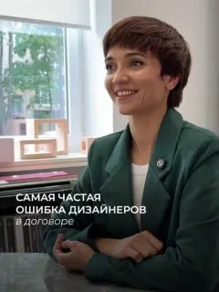

И рассказываю про суд в Ярославле. Спор по иску заказчика к студии дизайна. Заказчик отказался от договора и потребовал вернуть сумму предоплаты в полном объеме. Спойлер : этот суд мы проиграли. А дальше по существу... 👇 Аргументы заказчика: ✔️ Дизайнер не слышал пожелания заказчика и…
МЕБЕЛЬ-2026
Крюкова Елена
практикующий юрист и судебный эксперт, которая специализируется на правовом сопровождении дизайнеров интерьера, архитекторов, декораторов и предметных дизайнеров
Профессиональные соцсети
Telegram · профессиональный канал Елены Крюковой · Подтверждение
Лента спикеров →25.11.2026
«Час дизайна»:<br>День третий: «ДИЗАЙН КАК БИЗНЕС: клиенты, дизайнеры, продажи, бренд»
Павильон 3, зал 15, площадка «ФОРМУЛА ДИЗАЙНА»
О мероприятии
Модератор: Котлукова Светлана, журналист, интерьерный маркетолог, основатель агентства «АрхДиалог», преподаватель Британской высшей школы дизайна 11:00–11:40 Круглый стол «Что на самом деле нужно дизайнеру от мебельного бренда и как привлечь внимание дизайнеров» Спикеры: Лашку Надежда , дизайнер интерьера жилых и общественных помещений, основатель и ведущий дизайнер бюро LASHKU-DESIGN, член Союза дизайнеров Москвы Бушина Катерина, дизайнер интерьера, руководитель студии дизайна ROOM 11:50–12:30 «Как дизайнеру зарабатывать на мебели и комплектации в современных реалиях. Комплектация на маркетплейсах – новая реальность» Спикер: Гацкевич Анна, дизайнер интерьера, основатель и креативный директор студии GATKEVICH 12:40–13:20 «Хоумстейджинг: как развивается рынок в 2026 году» 14:30–15:10 «Контент, который продает. Инструменты залетающих видеороликов» Спикер: Преображенская Наталья, дизайнер, искусствовед, владелец топовой интерьерной студии «Уютная квартира» и бюро премиальных интерьеров TREND’UP, автор книги-бестселлера «Крутая квартира» и «Сам себе декоратор» 15:20–16:00 «Антикризисные решения на рынке дизайна 2026, которые реально сработали» Спикер: Стефак Анастасия , исполнительный директор студии TB.Design, эксперт по операционному управлению в дизайн‑бизнесе и практик масштабирования креативных компаний 16:00–17:00 «Договор, который защищает дизайнера: как избежать бесплатных правок, неоплаченных работ и конфликтов» Спикер: Крюкова Елена, практикующий юрист и судебный эксперт, которая специализируется на правовом сопровождении дизайнеров интерьера, архитекторов, декораторов и предметных дизайнеров Организаторы: агентство «АрхДиалог», АО «ЭКСПОЦЕНТР»
Источники:
Официальная деловая программа МЕБЕЛЬ-2026 · 2026-11-16 · Анонс будущего события, дата просмотра списка
Публикации связанных каналов
В ситуации, когда заказчик не дает техническое задание: не знает, чего хочет, или просто не хочет заполнять бриф (анкету), это важно не оставить "как есть", а отразить в договоре. 1️⃣ Прямо в текст договора вписать условие: "Стороны договорились, что Исполнитель приступает к выполнению работ по…
Что такое не везет, и как с этим бороться 😭 У меня сегодня было судебное заседание в Московском городском суде. Это апелляция по выигранному нами делу на стороне дизайнеров. И вот, 3 часа ожидания.. иии нас откладывают на ноябрь, чтобы заявитель внес деньги на депозит…

🔴 Самая частая ошибка дизайнеров в договоре . Рассказывает юрист Елена Крюкова Обсудить все нюансы мира дизайна: ☎️ +74951278887 💌 Напишите нам в Telegram или MAX 🖥 Мы в VK и в MAX 📍 Москва, ул. Дениса Давыдова, 4 #правонадизайн #ardostudio

Доброе утро вторника ✨ Я приехала в г. Ярославль защищать интересы дизайн-студии, с которой работаю уже много лет. Судимся с заказчиком, точнее он с нами судится.. Вообще очень много судов и досудебок, весеннее обострение идет по календарю, а не по погоде 🙈
Происхождение данных
Источники: